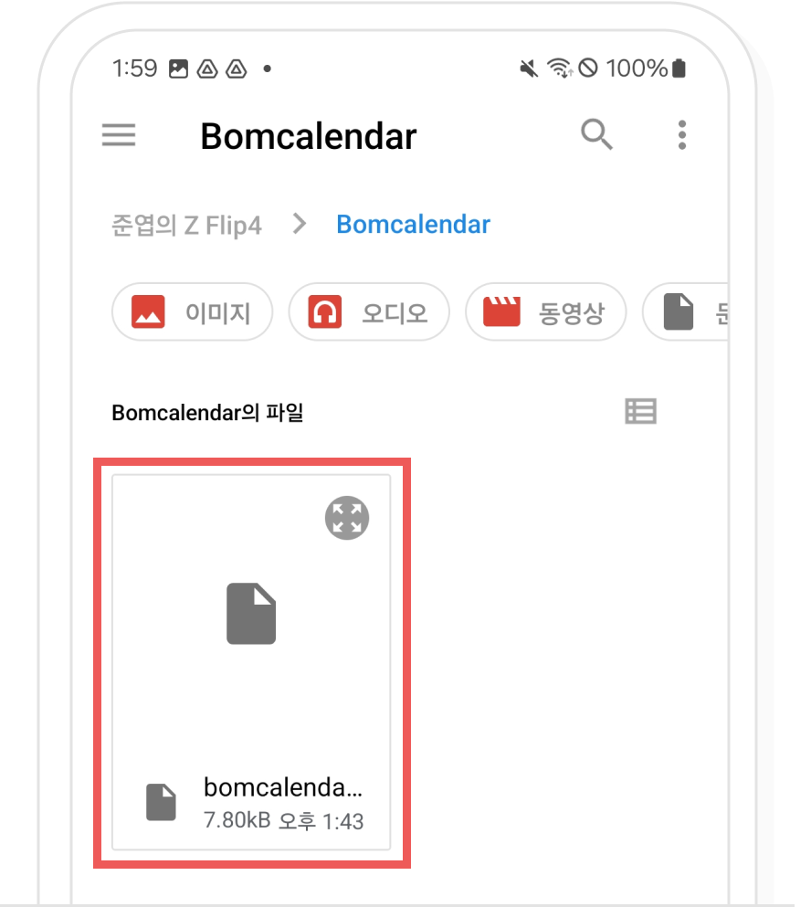
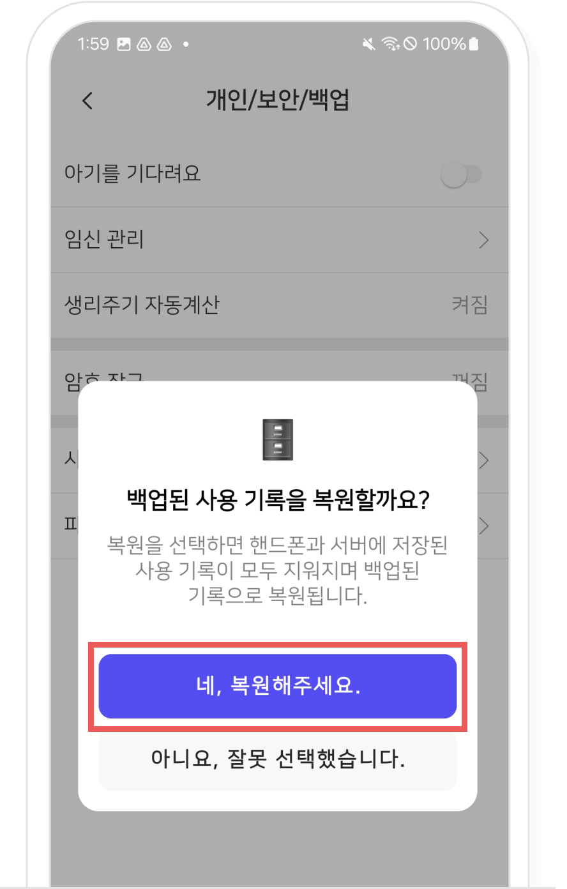

-
백업을 메일에 했다면 메일을 선택한 뒤 첨부된 사용 기록 파일을 다운로드해 주세요.

봄 캘린더 설정 > 개인/보안/백업에서 '파일에서 복원'을 선택해주세요.

복원할 파일을 선택해 주세요.
복원 확인 팝업에서 ‘네 복원해주세요.’ 버튼을 선택하면 복원이 완료됩니다.

백업을 메일에 했다면 메일을 선택한 뒤 첨부된 사용 기록 파일을 다운로드해 주세요.
봄 캘린더 설정 > 개인/보안/백업에서 '파일에서 복원'을 선택해주세요.
복원할 파일을 선택해 주세요.
복원 확인 팝업에서 ‘네 복원해주세요.’ 버튼을 선택하면 복원이 완료됩니다.